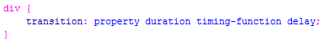
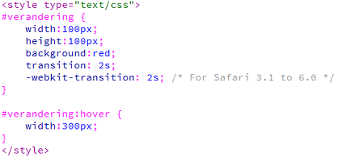

Transition
| Property | |||||
|---|---|---|---|---|---|
| transition | 10.0 | 26.0 4.0 -webkit- |
16.0 4.0 -moz- |
6.1 3.1 -webkit- |
12.1 10.5 -o- |
Met CSS3 is het mogelijk om elementen te laten veranderen van stijl, zonder dat daar Flash of ActionScript aan te pas komt. Dit doen we met de eigenschap transition. Je ziet dat er bij de nieuwste browsers geen prefix gebruikt hoeft te worden. Wil je het echter ook op oude webbrowsers laten werken, moet je wel een prefix gebruiken. In de voorbeelden wordt de prefix van -webkit- gebruikt. Dit om de oude safari browsers te ondersteunen.
| Let op: |
| Transition werkt niet in Internet Explorer 9 en eerder |
| transition | |
| transition-property | Optioneel. Welke eigenschap moet aangepast worden |
| transition-duration | Verplicht. De tijd dat de animatie er over doet. Uitgedrukt in seconden. |
| transition-timing-function | Optioneel. Welke manier van bewegen. Default is ease. |
| transition-delay | Optioneel. Vertraging van de start van de animatie. Default 0 seconden. |
| transition | Het combineren van alle 4 bovenstaand. |
CSS3 transitions zijn effecten waarmee een element geleidelijk veranderd van de ene stijl naar de andere. Het makkelijkste is om de transition eigenschap te gebruiken en daarachter de waardes te vermelden. Transition eist één eigenschap. De tijd hoelang het element er over moet doen. De andere drie zijn optioneel al valt aan te raden om de naam van het element die je wilt wijzigen ook erbij te vermelden. De syntax zie je in voorbeeld 5-1.
| Voorbeeld 5-1 |
|  |
Bekijk voorbeeld5-2. Van deze divisie wordt de breedte aangepast. Dit kan je zien bij het hover gedeelte. De waarde van de breedte is daar anders dan bij het origineel. De tijd die er over gedaan wordt is 2 seconden. Let erop dat je de tijd invult. Default is het namelijk 0 seconden, dus als je niets invult zal je geen resultaat zien.
| Voorbeeld 5-2 |
|  |
Kijk goed naar de divisie #verandering. Je ziet dat je daar alle eigenschappen van de divisie moet opgeven. Ook de transition geef je daar aan. Je geeft dus aan hoelang de verandering moet duren. In dit geval 2 seconden. Doordat bij #verandering:hover de breedte anders is dan bij #verandering, wordt de transition in werking gezet.
| Opdracht 1: transition |
Maak een nieuwe HTML5 pagina aan.
Sla het bestand op als Opdracht5-1.html. Test het in verschillende webbrowsers. |
| Opdracht 2: transition |
Maak een nieuwe HTML5 pagina aan.
Sla het bestand op als Opdracht5-2.html. Test het in verschillende webbrowsers. |
Het is ook mogelijk om meerdere aanpassingen tegelijk uit te voeren. Dit doe je door meerdere waardes bij het :hover eigenschap in te vullen. Je kunt zoveel veranderingen toevoegen als je zelf wilt.
| Opdracht 3: meerdere veranderingen |
Maak een nieuwe HTML5 pagina aan.
Sla het bestand op als Opdracht5-3.html. Test het in verschillende webbrowsers. |
Vorige les zijn we bezig geweest met het draaien van divisies of afbeeldingen. Dit kunnen we nu prima toepassen in combinatie met de transition. Het verschil tussen de 2d en 3d draaiing wordt dan een stuk duidelijker.
| Opdracht 4: 2d draaiing |
Maak een nieuwe HTML5 pagina aan.
Sla het bestand op als Opdracht5-4.html. Test het in verschillende webbrowsers. |
Je ziet dat deze na het rond draaien weer precies op dezelfde plek staat. Nu gaan we een 3d draaiing maken. Let erbij op dat Safari de 3d draaiing alleen ondersteunt met een prefix!
| Opdracht 5: 3d draaiing |
Maak een nieuwe HTML5 pagina aan.
Sla het bestand op als Opdracht5-5.html. Test het in verschillende webbrowsers. |